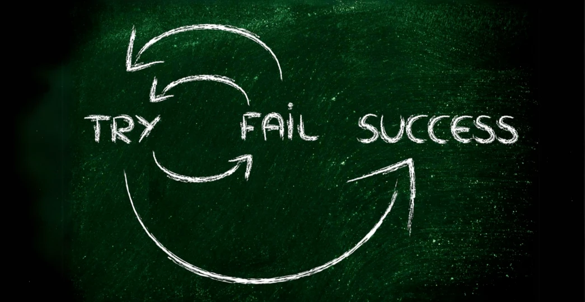
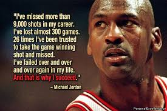

The Value of Failure in Personal Growth
-

(Citizens.me, 2024)
Failure is something that everyone goes through, it is how people chose to learn from their failures that is key. It is important to outline that failing, at some point, is inevitable and there can be many lessons learned from failing. Thomas Watson, former chairman and CEO of IBM, once said, “the fastest way to succeed is to double your failure rate” (Farson & Keyes, 2002, para. 1). Failure should be encouraged in all aspects and stages of life. Trying something and failing is always better than not trying at all (Maxwell, 2022, para. 9).
Failing allows individuals to develop resilience and learn from their mistakes. Every failure presents a learning opportunity that prepares individuals for future challenges. When people embrace failure, they are more likely to innovate and find new solutions to problems (Citizens.me, 2024). A mindset that welcomes failure fosters growth, determination, and the ability to persevere through tough situations.
-
There are many factors as to why people may not state that they have failed. One of the biggest factors is something that is taught at a very young age. When failure is admitted, it means an individual is taking blame (Edmondson, 2011, para. 4). Teaching that blame ties to failure can cause elements of fear to arise. Many individuals tend to feel embarrassed when they admit that they have failed. Sometimes the embarrassment feels that there is a loss of esteem and stature (Farson & Keyes, 2002, para. 3). Fearing failure can hold individuals back from taking risk or trying new things (Forbes Business Council, 2021, para. 1). Limiting individuals that could have been successful if they had tried (Maxwell, 2022, para. 2).
-

(Godfrey, n.d.)
How individuals deal with failure will ensure they are learning from the failure. There are a few factors that people could keep in mind when they encounter failure. The top factor individuals should do is always be positive when failure occurs. Ensuring that your state of mind is in the right place when dealing with failure is important to pick yourself up (Maxwell, 2022, para. 6). When you beat yourself up over every failure, there is no place for you to be able to overcome the failure. Being positive can help find the lesson from the failures that have happened. Another thing that people can do is to appreciate those around them, especially if the failure happens amongst a team. When there is a team, everyone needs to understand that they win and lose together (Maxwell, 2022, para. 7). Failure is temporary, but the team is still going to be there in the end. Ensuring confidence covers all members of the team when failure happens is important for being able to overcome the situation.
One big factor when handling failure would be to analyze why the failure happened in the first place. This is how individuals can ensure that the same failure will not happen again (Maxwell, 2022, para. 8). Analyzing the situation is when lessons are learned. Analyzing also ties into being positive. When analyzing a situation with the right state of mind allows individuals to see the positive outcomes from the failure.
-
There are many ways that failure should be encouraged throughout life. One way to encourage failure would be to celebrate any failures that are happening (Forbes Business Council, 2021, para. 3). For a workplace, this could be set up like a quick icebreaker at the beginning of a meeting. Individuals will explain a failure they have endured and then others will congratulate or cheer about it. This shows that failure can be a positive thing that happens. Another way to encourage failure is allowing it to be spoken open and freely. It is just as important to highlight your failures as it is to highlight any successes (Forbes Business Council, 2021, para. 4). Showing that there are safe spaces to be able to disclose failures will allow individual to feel more comfortable with sharing their failures. Within schools and workplaces, professors and managers that can express failures they have endured can show others that failure is a good thing.